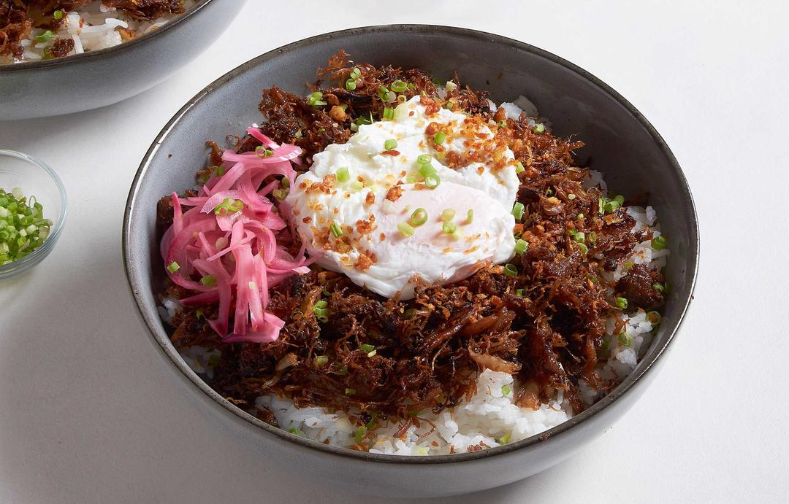

Chicken Adobo Flakes

Description
Adobo refers to the Filipino dish and cooking technique where ingredients are braised in vinegar with salt (usually soy sauce), garlic, peppercorns, and bay leaves. Almost anything can be adobo: meat, fish, seafood, vegetables. You’ll find endless variations on adobo across the Philippines, each with their own unique flavors, ingredients, spices, and textures.
Recipe
This recipe makes a simple chicken adobo destined for adobo flakes. Boneless thighs save you the trouble of picking out bones while flaking the meat. How you shred your chicken is up to you, whether it's long, meaty strands; short, almost ground-up floss; or something in between. Serve these crispy flakes with garlic rice for breakfast, over lugaw for texture, or with banana leaf-wrapped rice for homemade pastil.
Ingredients
Chicken Adobo
- 500g boneless chicken thighs
- 1 head of garlic
- 1 tablespoon of whole peppercorn
- 3 bay leaves
- 1/4 cupt of white vinegar
- 3 tablespoon of soy sauce
- 1 tablespoon of dark soy sauce
- 1-3 teaspoon of brown sugar
Adobo Sauce
- 2 cups of warm water
- 1 chicken broth cube
Adobo FLakes
- 3 tablespoon of oil
- Poached egg
- Pickled red onions
Steps
- Marinate chicken: Combine all marinade ingredients in a bowl. Mix everything together with clean hands, making sure that all your chicken pieces are evenly coated. Cover and refrigerate overnight to marinate.
- Cook adobo: The next day, heat a pan over medium-high heat. Sear chicken pieces on one side until browned and slightly caramelized. Remove chicken. Deglaze pan with warm water and add the chicken broth cube. Stir until cube is dissolved. Add remaining marinade and chicken pieces. Let cook until meat is tender—the exact cooking time will depend on the size of your chicken. Season to taste, then serve. Let leftovers cool completely before refrigerating.
- Make adobo flakes: Shred leftover chicken adobo along the grain using two forks or your hands. Heat oil in a pan over medium heat, then fry shredded chicken, working in batches if necessary, until dry and golden brown. Be careful not to burn the flakes. Transfer fried flakes to a heatproof plate or tray lined with paper towels.
- Serve: Scoop one serving adobo flakes over rice. Place poached egg over the flakes, and pickled red onions on the side. Serve warm.